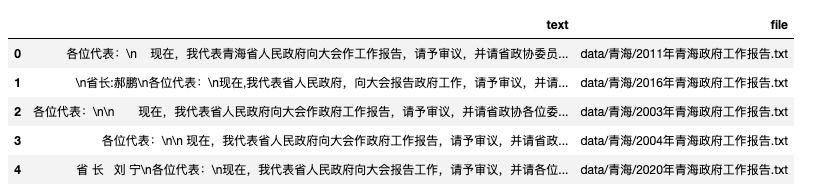
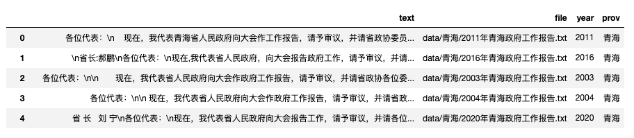
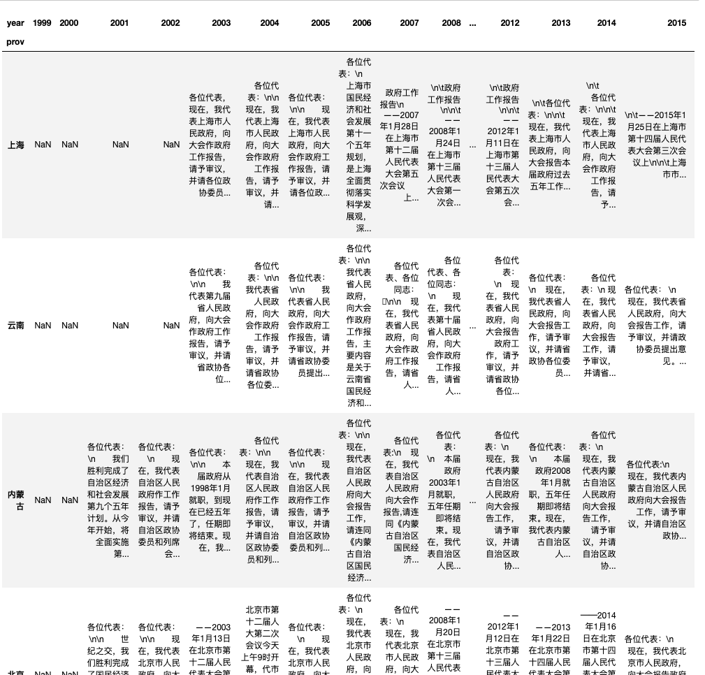

使用31省市的1999-2021年的省级政府工作报告，绘制出的不同类别关键词的趋势图。直接上最终效果效果图


一、准备数据
31M的数据，含file和text两个字段， 点击下载gov_reports.csv
import pandas as pd
df = pd.read_csv('gov_reports.csv')
df.head()

用正则表达式整理出省份和年份的字段
df['year'] = df['file'].apply(lambda f: re.findall('\d{4}', f)[0])
df['prov'] = df['file'].apply(lambda f: re.findall('/(.*?)/', f)[0])
df.head()

构建透视表，行索引名为省份，列名为年份， 单元格内填充工作报告。代码比较复杂， 其实我也似懂非懂，死记硬背吧。
import pandas as pd
table_df = pd.pivot_table(df,
columns='year', #列-年份
index='prov', #行-省份
values='text', #单元格-文本
aggfunc=lambda cs: ''.join(str(c) for c in cs)) #让单元格填充文本
table_df

二、构建可视化函数
本部分代码实现的功能
- 构建关键词词频统计函数keywords_frequency
- 输入的是文本和关键词列表
- 返回的是一个数字
- 对table_df中的每个单元格使用keywords_frequency函数
- applymap从水平和垂直方向同时应用keywords_frequency
- 调用pyecharts可视化
代码比较费劲，不太方便讲，直接给完整代码
#pip install pyecharts==2.0.1
from pyecharts import options as opts
from pyecharts.charts import Line
import jieba
def keywords_frequency(cell, keywords):
try:
wcount = 0
words = jieba.lcut(cell)
for keyw in keywords:
wcount += words.count(keyw)
return wcount/len(words)
except:
return 0
def plot_trends(df, keywords, title):
df2 = df.applymap(lambda cell: keywords_frequency(cell, keywords))
line_chart = Line()
line_chart.add_xaxis(xaxis_data=df2.columns.tolist())
for linename in df2.index:
linedata = df2.loc[linename].tolist()
line_chart.add_yaxis(series_name = linename,
y_axis=linedata,
label_opts=opts.LabelOpts(formatter="{b}",
position="right",
is_show=False))
line_chart.set_global_opts(
title_opts=opts.TitleOpts(title=title,
pos_top="5%",
pos_right='30%'),
xaxis_opts=opts.AxisOpts(name="Year"),
yaxis_opts=opts.AxisOpts(name="Value"),
legend_opts=opts.LegendOpts(pos_right=True, orient='vertical'),
)
# Render the chart as an HTML file
return line_chart.render_notebook()
三、成品展示
3.1 三农
展示三农问题关键词20年来变化，因为省份太多会干扰视觉，这里大邓挑选了8个省市。
selected_df = table_df.loc[['河北', '山东', '北京', '上海', '广东', '浙江', '黑龙江', '湖南'],:]
keywords = ['农村', '农业', '农民']
title='各地政府年度工作报告三农词讨论趋势(1999-2021)',
plot_trends(df=selected_df,
keywords=keywords,
title=title)
从上图中，可以看出
- 05年提及三农词占比最多的是湖南，是20年以来8省市中占比值最高记录
- 大多数省份在07年达到峰值
- 07年前，工作报告中提及三农词提及三农词的占比趋势是上升的
- 07年后，工作报告中提及三农词提及三农词的占比趋势是下升的。
3.2 科学技术
selected_df = table_df.loc[['河北', '山东', '北京', '上海', '广东', '浙江', '黑龙江', '湖南'],:]
keywords = ['科学', '技术', '创新']
title='各地政府年度工作报告科学技术词讨论趋势(1999-2021)',
plot_trends(df=selected_df,
keywords=keywords,
title=title)
从上图中，可以看出
-
从2000年以来， 工作报告中提及科学技术词提及的占比趋势一直是稳步上升的
-
8省市20多年的工作报告中，提及科学技术词最少的省份是黑龙江。
-
07年后，工作报告中提及三农词提及三农词的占比趋势是下升的。
3.3 环保
selected_df = table_df.loc[['河北', '山东', '北京', '上海', '广东', '浙江', '黑龙江', '湖南'],:]
keywords = ['环境', '环保', '绿色', '健康', '青山', '青山绿水', '绿水']
title='各地政府年度工作报告环保词讨论趋势(1999-2021)',
plot_trends(df=selected_df,
keywords=keywords,
title=title)

从上图中，可以看出
-
08、09年均值较低，前后提及环保词占比更高。可能的原因有
- 08年处于全球金融危机，经济不景气，相对正常年份，少管不管环境问题。
- 为准备北京奥运会，各地都有环保压力， 体现在08年前提及占比值整体处于较高水平
- 奥运后，松一口气？
-
最近几年，提及值一直处于上升趋势

在看上图， 06-12年的北京和河北，趋势不太一样。
- 北京09达到局部最高值后下降了几年
- 河北06-09与北京反着来，一直在下降
- 河北09之后，可能是钢铁等行业较多，环保压力随着国家的重视，被迫快速拉升
基本跟自己的记忆产生了联系，数据可视化效果还是挺不错的。